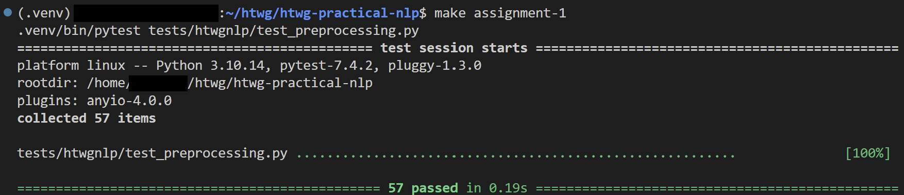

Assignments¶
The course materials are accompanied by assignments to deepen your understanding of the topics.
The assignments are voluntary. But completing the assignment earns you bonus points for the exam!
If you have basic programming skills, you should be able to complete the assignments.
Structure¶
Throughout the course, we will work on a Python package called htwgnlp.
The package is located in the src directory and is a fully functional and installable Python package.
The core sturcture will be provided, and the assignments will be about implementing the missing functionality.
To work on an assignment, you will need to locate the TODO ASSIGNMENT-* items in the code.
Example
For example, to work on the first assignment, use the search functionality of your IDE to find all relevant items:
Tip
You should check the unit tests located in the tests directory to see the exact requirements that need to be implemented.
Testing your Implementation¶
Once you implemented everything, you can run the tests to check if everything works as expected.
You can run the tests using the provided make assignment-* commands.
If all your tests pass, you successfully completed the assignment! 🚀
Example
For example, to test your implementation for the first assignment, you can run:
Tip
If your IDE provides the functionality, you can also run the tests directly from the IDE.
Note
You can also use the native pytest commands, but then you need to know the exact path to the tests:
Pytest is a very powerful testing framework and the de-facto standard for testing in Python. You will not need to know all the details, but if you want to learn more, check out the official Pytest documentation.
Jupyter Notebooks¶
Some of the assignments are accompanied by Jupyter notebooks.
If you successfully complete an assignment, you can run the accompanying notebook and see your code in action.
See the Getting Started guide for instructions on how to start the Jupyter lab server.
Submission¶
To submit an assignment, you will need to provide screenshots of a successful test run.

Please submit your screenshots via email to me.
When you submit your assignments, please provide a short description of your major learnings or challenges for each assignment.
Info
Depending on your preference, you can submit all assignments at once, or submit them separately.
Working on your Assignments¶
How you work on your assignments on your local machine is completely up to you. But following a consistent branching strategy will probably make you life easier.
Info
This is regardless of whether you use the recommended approach to fork the repository, or just clone it locally.
Note
Feel free to skip this section if you have basic familiarity with git and branching workflows.
Tip
If you are new to git or not very experienced, this is a great learing opportunity for you, as git is a very important tool in nowadays software development. You can work on the assignments without getting too much into git, but this is a great way to gain some experience with git.
Using a single branch¶
Generally, it is recommended to work on your assignments in a separte branch:
Then, you can work on your assignments and commit your changes locally:
Tip
If you work on a fork, you can also push your changes to your remote repository. This is not possible if you just clone the course repository.
Using multiple branches¶
Similarly, you could create a new branch for each assignment. This can help you to keep your work separated.
Using your local working tree¶
If you don't want to deal with git, you could also work purely locally without committing anything.
Warning
This is not recommended, as this bears the risk of losing your progress, or dealing with lots of merge conflicts. When pulling updates, you probably need to stash your changes. But be careful: if not done properly, you may lose your progress! 😱
Fetching Updates¶
As described in the getting started guide, there will be updates from time to time.
It can happen that these updates affect the assignments - just in case you are wondering why your tests suddenly fail 😅).
So make sure to always fetch the latest updates before working on your assignments.
Bonus Points for Assignments¶
Each completed assignment earns you one bonus points for the exam. 🏅
Furthermore, you can earn an extra two bonus points if you manage to package and publish your code to Test PyPI.
Tip
Note that the assignment code is organized as a fully functional Python package which you can push to a package index and install it via pip.
Find more details on how to package and publish your code here.